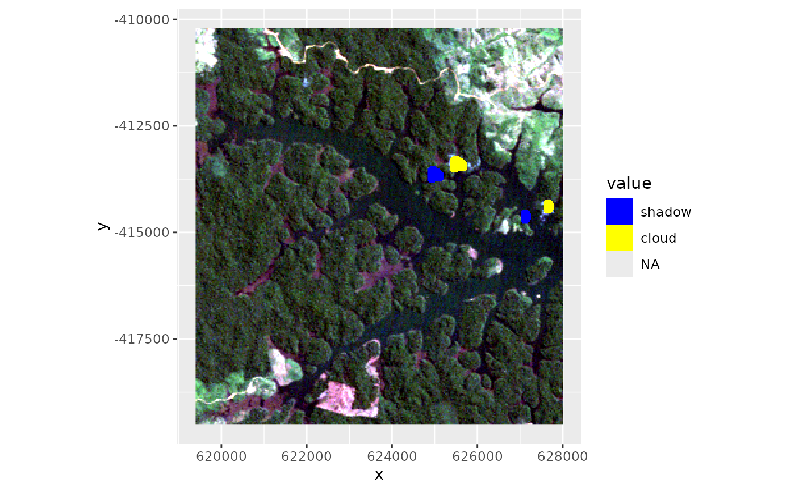
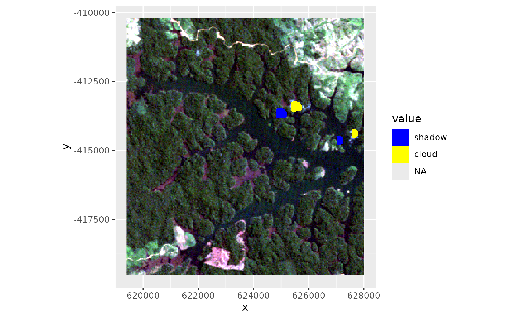

Intended for interactive use, cloudShadowMask will ask the user to select a few
corresponding cloud/cloudShadow pixels which will be used to estimate coordinates
for a linear cloudmask shift.
Usage
cloudShadowMask(
img,
cm,
nc = 5,
shiftEstimate = NULL,
preciseShift = NULL,
quantile = 0.2,
returnShift = FALSE
)Arguments
- img
SpatRaster containing the scene
- cm
SpatRaster. Cloud mask (typically the result of
cloudMask)- nc
Integer. Number of control points. A few points (default) are fine because the final shift is estimated by coregisterImages.
- shiftEstimate
NULL or numeric vector of length two (x,y). Estimated displacement of shadows in map units. If
NULL, the user will be asked to select control points interactively.- preciseShift
NULL or numeric vector of length two (x,y). Use this if cloud/cloud-shadow displacement is already known, e.g. from a previous run of
cloudShadowMask.- quantile
Numeric (between 0 and 1). Quantile threshold used for image co-registration. By default the 20% quantile of the total intensity (sum) of the image is used as potential shadow mask.
- returnShift
Logical. Return a numeric vector containing the shift parameters. Useful if you estimate parameters on a subset of the image.
Details
This is a very simplistic approach to cloud shadow masking (simple shift of the cloud mask). It is not image based and accuracy will suffer from clouds at different altitudes. However, just as cloudMask this is a quick and easy to use tool for Landsat data if you're just working on a few scenes and don't have fMask or CDR data at hand. Although for some test scenes it does perform surprisingly well.
Examples
library(ggplot2)
## Import Landsat example subset
## We have two tiny clouds in the east
ggRGB(lsat, stretch = "lin")
## Calculate cloud index
cldmsk <- cloudMask(lsat, blue = 1, tir = 6)
ggR(cldmsk, 2, geom_raster = TRUE)
 ## Define threshold (re-use the previously calculated index)
## Everything above the threshold is masked
## In addition we apply a region-growing around the core cloud pixels
cldmsk_final <- cloudMask(cldmsk, threshold = 0.1, buffer = 5)
## Plot cloudmask
ggRGB(lsat, stretch = "lin") +
ggR(cldmsk_final[[1]], ggLayer = TRUE, forceCat = TRUE, geom_raster = TRUE) +
scale_fill_manual(values = c("red"), na.value = NA)
#> Warning: Removed 88752 rows containing missing values or values outside the scale range
#> (`geom_raster()`).
## Define threshold (re-use the previously calculated index)
## Everything above the threshold is masked
## In addition we apply a region-growing around the core cloud pixels
cldmsk_final <- cloudMask(cldmsk, threshold = 0.1, buffer = 5)
## Plot cloudmask
ggRGB(lsat, stretch = "lin") +
ggR(cldmsk_final[[1]], ggLayer = TRUE, forceCat = TRUE, geom_raster = TRUE) +
scale_fill_manual(values = c("red"), na.value = NA)
#> Warning: Removed 88752 rows containing missing values or values outside the scale range
#> (`geom_raster()`).
 #' ## Estimate cloud shadow displacement
## Interactively (click on cloud pixels and the corresponding shadow pixels)
if (FALSE) shadow <- cloudShadowMask(lsat, cldmsk_final, nc = 2) # \dontrun{}
## Non-interactively. Pre-defined shadow displacement estimate (shiftEstimate)
shadow <- cloudShadowMask(lsat, cldmsk_final, shiftEstimate = c(-16,-6))
## Plot
csmask <- terra::merge(cldmsk_final[[1]], shadow)
ggRGB(lsat, stretch = "lin") +
ggR(csmask, ggLayer = TRUE, forceCat = TRUE, geom_raster = TRUE) +
scale_fill_manual(values = c("blue", "yellow"),
labels = c("shadow", "cloud"), na.value = NA)
#> Warning: Removed 88534 rows containing missing values or values outside the scale range
#> (`geom_raster()`).

#' ## Estimate cloud shadow displacement
## Interactively (click on cloud pixels and the corresponding shadow pixels)
if (FALSE) shadow <- cloudShadowMask(lsat, cldmsk_final, nc = 2) # \dontrun{}
## Non-interactively. Pre-defined shadow displacement estimate (shiftEstimate)
shadow <- cloudShadowMask(lsat, cldmsk_final, shiftEstimate = c(-16,-6))
## Plot
csmask <- terra::merge(cldmsk_final[[1]], shadow)
ggRGB(lsat, stretch = "lin") +
ggR(csmask, ggLayer = TRUE, forceCat = TRUE, geom_raster = TRUE) +
scale_fill_manual(values = c("blue", "yellow"),
labels = c("shadow", "cloud"), na.value = NA)
#> Warning: Removed 88534 rows containing missing values or values outside the scale range
#> (`geom_raster()`).
